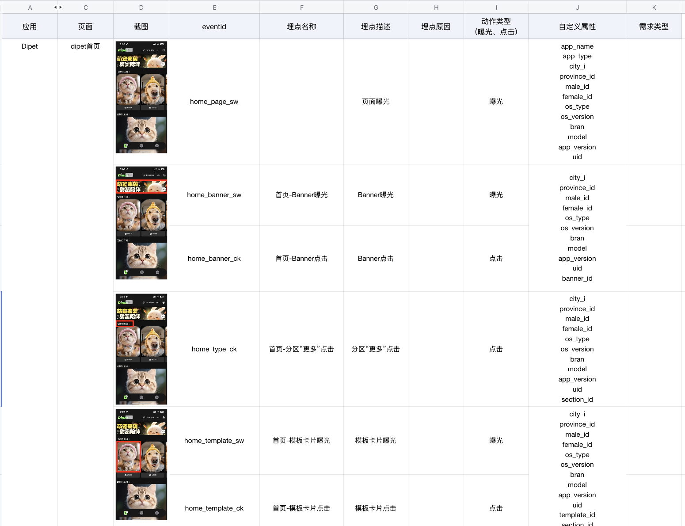
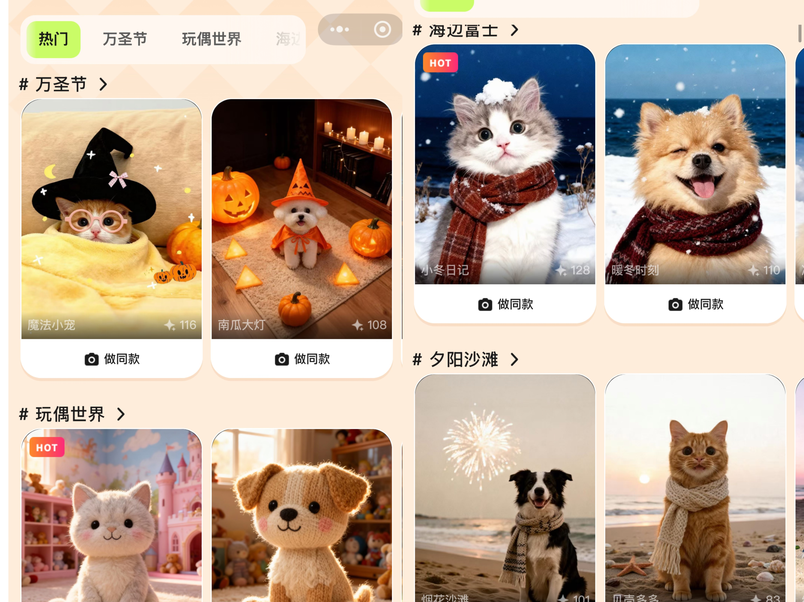

滴滴出行
宠物影像生成
承接部门 0-1 探索项目，完成“模版生成 + 心情识别” Agent 的搭建与落地，并通过小红书、视频号等社媒矩阵验证，实现拉新、激活、转化与留存。
项目概述与职责
业务目标
快速验证 0-1 宠物内容方向探索项目的 MVP。
核心关注指标：
具体负责事项
竞品调研与数据分析
量化需求优先级，通过漏斗分层定位流失节点，主导 AB 实验迭代策略。
Agent 构建与调优
基于 Coze 设计工作流，引入火山引擎组件，串联多模态生成链路。
评测体系建设
制定热点度、还原度等离线评测标准，针对 Badcase 优化 Prompt 与工程链路。
用户增长策略 (PLG)
制定种子用户激活 SOP，细分画像输出定制化利益点，引导用户裂变。
模版生成 Agent Workflow
离线评估集与埋点设计
评测标准示例

宠物 Agent 模版生成评测标准（包含热点度、还原度等维度）。
用户行为埋点设计

通过科学的埋点设计，精确定位用户流失节点，驱动 AB 实验策略迭代。
宠物影像模版生成与 AIGC Prompt 示例

宠物影像生成
基于微调模型与定制化 Prompt
这是一幅【艺术风格】的【镜头构图】场景，
具有【绘画技法/材质表现】。
画面中，一只【宠物主体描述】
位于【场景主体】，
正在【动作行为】，
神态【情绪描述】。
周围摆放着【道具装饰元素】，
细节精致丰富。
背景是【背景环境元素】，
光影【光线描述】，
整体呈现出【整体氛围关键词】的视觉氛围。
核心业务成果
CTR +37%
分享率 +29.7%
核心转化指标大幅提升
成功验证 MVP
93+ 稳定评分
满意度 90%+
评测标准与工程链路双优
保障高质量体验
1000+
种子用户增长
精准定位高潜群体
实现冷启动高效拉新